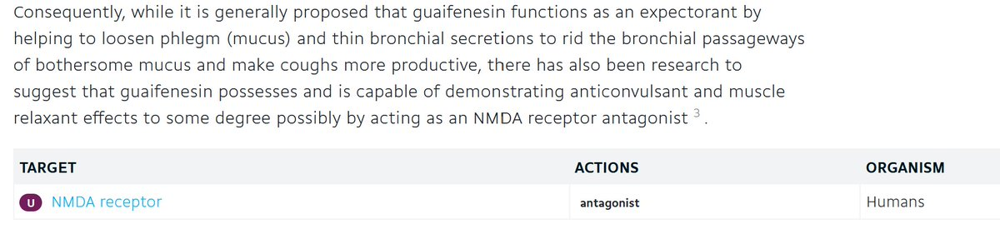

鼠尾草～🌿
@SalviaSWC
@xhanjd145869 @520illusion 但是窝觉得没有，它不能穿过血脑屏障🥺（除非你指的是呕吐价值

鼠尾草～🌿
@SalviaSWC
虽然大家都知道愈创木酚甘油醚是一个弱效NMDA拮抗剂，但我觉得这一点并不是愈美与单方右美的药效存在差异的原因
因为愈创木酚甘油醚的脂溶性太低了，它的logP是1.39(drugbank)，很可能无法透过血脑屏障，无法有中枢作用。
虽然动物实验表明愈醚有一定的抗惊厥和肌松效力，不过那就是另一个兔子洞了（ https://t.co/NVc7MHA6Lc
雨町雨町
@xhanjd145869
@SalviaSWC @520illusion 关键是愈创木酚甘油醚是真有药效而不是od价值啊